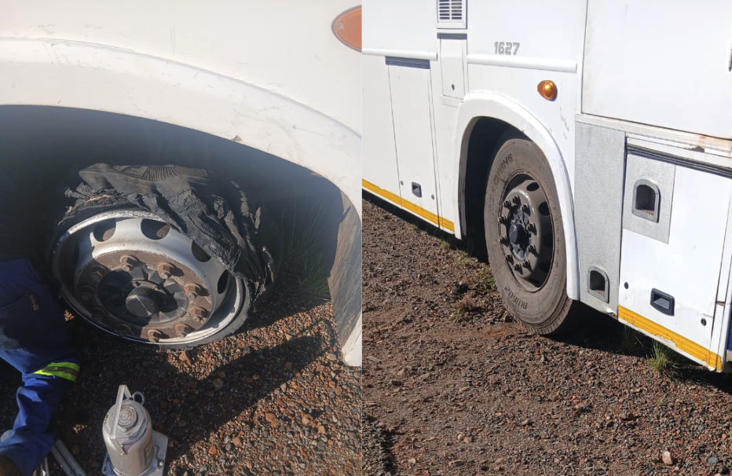
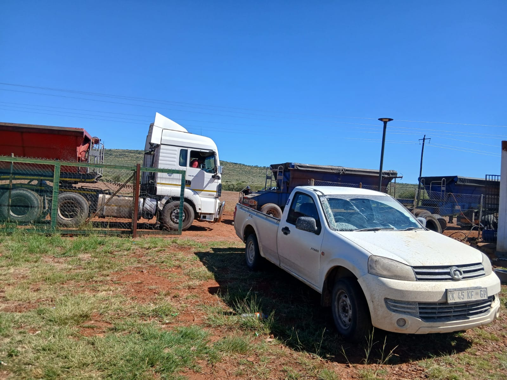

Mobile truck & bus tyre services — puncture repairs, strip & fit, tyre rotation, valves, and brand-new and second-hand tyres, delivered to wherever your fleet breaks down. Keeping trucks moving 24 hours a day.
From roadside callouts to full tyre management, we keep trucks, buses and heavy-duty fleets compliant, safe, and on the road longer.

On-call tyre fitting, repairs and replacements wherever a breakdown happens — fast, reliable, anywhere, anytime. Callout fees apply depending on time of day.

Puncture repair, strip & fit, tyre rotation, and valve supply — all done on-site by our mobile team for trucks and busses.

Brand-new and quality second-hand truck and bus tyres, at competitive prices, with fitting available.

Ongoing repair, maintenance and compliance servicing for heavy-duty fleets, prolonging tyre lifespan.
Prices apply to trucks and busses. Callout fees vary depending on time of day.
We service: Trucks, Buses, TLBs, Graders and other heavy-duty vehicles. Brand-new and second-hand tyres available.

Tshidiso Wheel and Tyre is a mobile truck and bus tyre service specializing in 24/7 roadside assistance, puncture repairs, strip & fit, tyre rotation, and brand-new and second-hand tyres for trucks, buses, TLBs, graders and other heavy-duty vehicles. We also provide comprehensive tyre management services, including repairs and maintenance, to keep vehicles performing safely for longer.
Founded by Tshidiso Kgoa, the business builds on a family legacy of running a successful tyre operation. Inspired by his experience helping manage his father's enterprise, Tshidiso set out to build a company that serves the community while contributing to the local economy and youth employment.